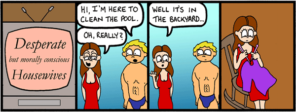
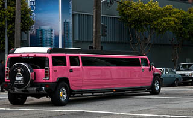
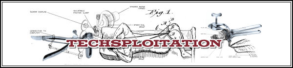

Tomorrow’s the last day to sign up for the National Karaoke League
|
photo / Doctor Who Ten points if you can name that song
If you’re sick of singing “Wannabe” alone in front of the mirror with a hairbrush microphone, if you want to share your beautiful voice with the world but don’t want to audition for American Idol, or if you just plain want to get drunk and belt out Mariah Carey at the top of your lungs, sign up for the summer session of the National Karaoke League.
Where’s the cheapest gas in Austin?
|

photo / Marcin Wichary Yay!
According to AustinGasPrices.com, it’s at Costco (Research Blvd and Great Hills Trl) and Sam’s Club (9700 N Capital of Texas Hwy), where regular gas is $3.69 per gallon today. If you don’t have a membership at those places, which is required if you want to fill up at their stations, your next best bet is the Exxon at Mopac and Duval where it’s $3.72 per gallon. And who has the most expensive gas? The Valero station at Barton Springs and Kinney Ave, where it’s $3.95 per gallon.
Finding cheap gas can of course wind up costing you more if you drive far to get it, but this site is worth bookmarking if you’d like to keep an eye on prices around town or have more ammo in your small-talk arsenal. You can look up prices for regular, mid-grade, premium, and even diesel – check it out.
The Happiest Hours: Polvos
|
Polvos
Polvos epitomizes the South 1st Mexican Food Experience. It’s the best place to eat on that strip. You definitely want to sit outside, where the ambiance is strongest. It’s always full of eclectic people – music animates everything illuminated by the gigantic neon sign and strings of light bulbs. Waiting is part of the experience here, so come when you’re in a mood to take it easy. Wear what you want – you’re down south. You can drink in the parking lot if you want to pop your tailgate. The fish tacos do not disappoint. Even folks who are not into fish tacos should try the fish tacos here. Make reservations if you have a particularly large group – it’s a fun place for parties.
Polvos has happy hour Monday through Friday from 4pm to 7pm, offering $.50 off all house margaritas and beers.
Polvos
2004 S 1st • 441-5446
Wikipedia can’t save us
|

Last week I wrote about the premise of Oxford professor Jonathan Zittrain’s new book, The Future of the Internet and How to Stop It (Yale University Press). He warns about a future of “tethered” technologies like the digital video recorder and smartphones that often are programmed remotely by the companies that make them rather than being programmed by users, as PCs are. As a partial solution, Zittrain offers up the idea of Wikipedia-style communities, where users create their own services without being “tethered” to a company that can change the rules any time.
Unfortunately, crowds of people running Web services or technologies online cannot save us from the problem of tethered technology. Indeed, Zittrain’s crowds might even unwittingly be tightening the stranglehold of tethering by lulling us into a false sense of freedom.


Recent comments